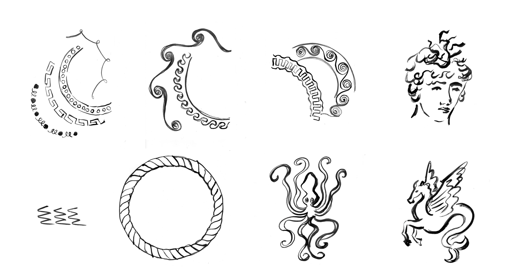

/ MOTION GRAPHICS
/ AGENCY WORK
/ CLIENT: GINORI 1735
/ 2025
Creation of three teaser videos for the launch of Il Viaggio di Nettuno on Ginori’s Instagram page.
Il Viaggio di Nettuno is a collection developed in collaboration with artist Luke Edward Hall, where myth and tradition are reimagined through a contemporary and poetic lens.
The videos are built by animating the artist’s original sketches, creating a storytelling where the sea becomes the connecting element. The first video sets the atmosphere by introducing the collection through Hall’s sketches, the second brings the decorative borders to life as they are infused with the colors of the collection’s palette, and the final video reveals the illustrations in their complete form, concluding the journey.
